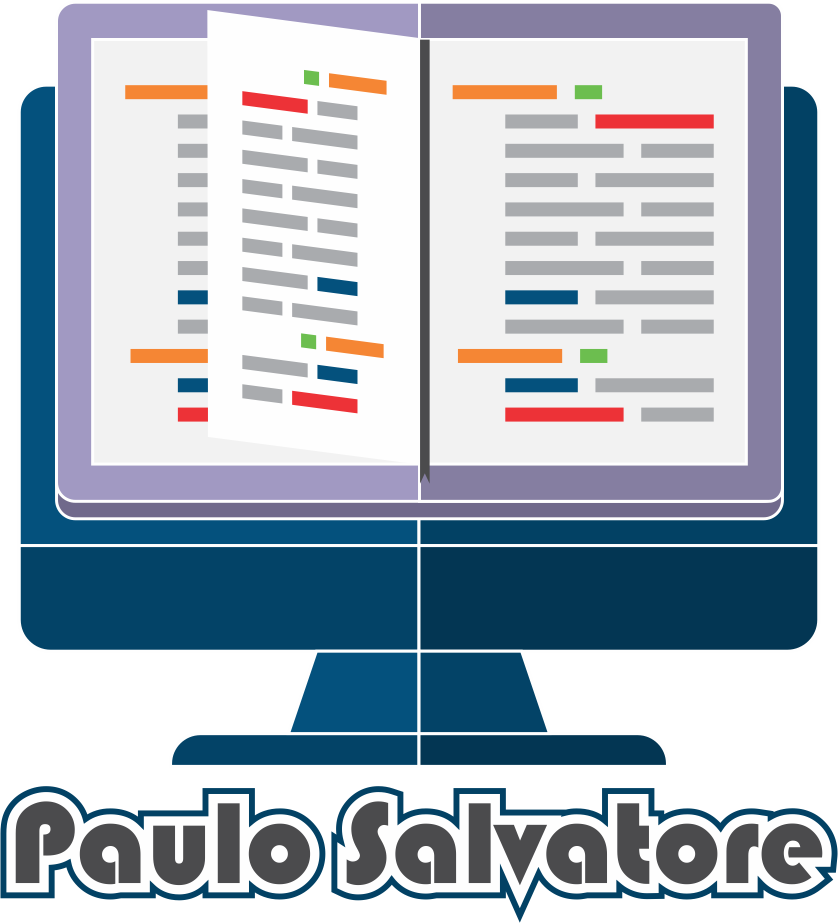

Essa página irá conter exercícios e links úteis que serão utilizados durante todo o aprendizado na linguagem Python.
Todos os exercícios estarão disponibilizados através de links, que serão direcionados para um projeto no GitHub.
O projeto no GitHub, por sua vez, possuirá duas pastas, uma chamada exercícios e outra chamada resoluções.
Dentro da pasta exercícios, teremos vários arquivos, um cara para cada exercício, onde dentro do arquivo haverá o enunciado do exercício e qualquer informação que seja útil para a resolução do mesmo.
Na tabela abaixo estão listados todos os exercícios disponíveis atualmente. Para visualizar o arquivo com o enunciado clique no link na segunda coluna da tabela que o arquivo abrirá em uma nova aba.
Você também pode clicar direto no link 'raw', caso deseje visualizar a versão 'crua' do arquivo, onde você poderá salvar o arquivo de uma maneira mais fácil.
Dica: Clique com o botão direito no link do 'raw' e selecione a opção 'Salvar link como' para salvar diretamente o arquivo sem precisar abrir o link.
A terceira coluna possui o link para a resolução do exercício e você poderá conferir tanto para checar se a maneira que você fez chega próximo da resolução ou para consultar caso não esteja conseguindo prosseguir com o exercício.
Observação: Pode ser que a resolução do exercício apresentada no arquivo de resolução esteja diferente da maneira que você resolveu o exercício. Isso não tem problema! Existem várias maneiras de resolver o mesmo problema e de programar também! Isso é perfeitamente normal e acontece o tempo inteiro.
| # | Exercício | Resolução |
|---|---|---|
| 1 | Exercício (Raw) | Resolução (Raw) |
Esse bloco da página é destinado para links úteis que podem servir tanto para iniciar o desenvolvimento com a linguagem quanto para auxiliar com o decorrer do desenvolvimento, seja links da documentação ou de exemplos mais específicos de aplicação de códigos, entre outros.
Nessa área também estão disponiveis os links de softwares que utilizamos para o desenvolvimento.